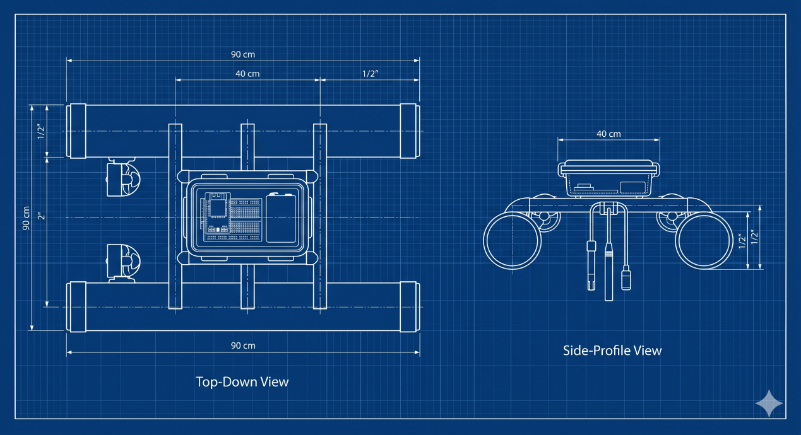

Mae Fah Luang University · Computer Engineering · 2026
Smart Water
Surface Boat
A mobile system for collecting surface-water readings across planned locations, tracking each sample by GPS, and reviewing the mission through a web dashboard.
Autonomous, location-aware surface-water monitoring
End-to-end system
One mission connects the boat to the dashboard
The boat gathers readings along a route, keeps a local log, then sends mission data through a base station for storage and review.
- 01
Measure
Temperature, pH, turbidity, GPS position and heading.
- 02
Navigate
ESP32-S3 follows waypoints using GPS, compass and heading control.
- 03
Transfer
ESP-NOW carries mission commands and telemetry to the base station.
- 04
Review
FastAPI and MySQL support status, route history, alerts and heat maps.
System overview
Move measurements between locations
Fixed monitoring stations report conditions at their installed positions. This boat adds mobility: it follows planned waypoints and links sensor readings with their location along the mission route.
See how waypoint planning works
Explore project details